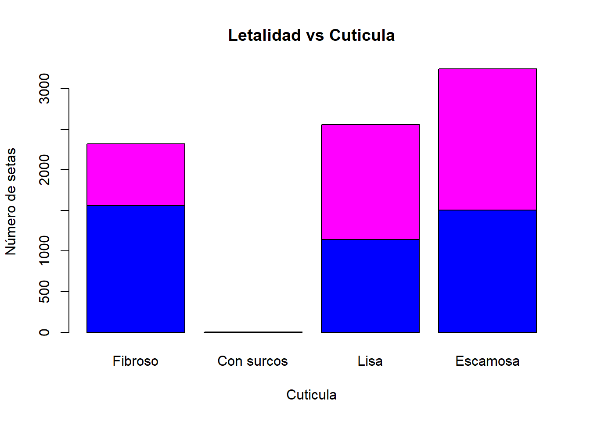

4 Preprocesado de datos.
Para poder transformar las variables en factores, lo hacemos aplicando el comando as.factor() a todas las variables.
Ahora podemos ver mejor como son nuestros datos.
summary(datos.setas)## Letalidad Forma_S Cuticula Color_S Escamas Olor Fijacion_L
## e:4208 b: 452 f:2320 n :2284 f:4748 n :3528 a: 210
## p:3916 c: 4 g: 4 g :1840 t:3376 f :2160 f:7914
## f:3152 s:2556 e :1500 s : 576
## k: 828 y:3244 y :1072 y : 576
## s: 32 w :1040 a : 400
## x:3656 b : 168 l : 400
## (Other): 220 (Other): 484
## Espacio_L Tamaño_L Color_L Forma_T Tallo_raiz Superficie_T1
## c:6812 b:5612 b :1728 e:3516 ?:2480 f: 552
## w:1312 n:2512 p :1492 t:4608 b:3776 k:2372
## w :1202 c: 556 s:5176
## n :1048 e:1120 y: 24
## g : 752 r: 192
## h : 732
## (Other):1170
## Superficie_T2 Color_T1 Color_T2 Tipo_V Color_V N_anillos
## f: 600 w :4464 w :4384 p:8124 n: 96 n: 36
## k:2304 p :1872 p :1872 o: 96 o:7488
## s:4936 g : 576 g : 576 w:7924 t: 600
## y: 284 n : 448 n : 512 y: 8
## b : 432 b : 432
## o : 192 o : 192
## (Other): 140 (Other): 156
## Tipo_anillo Color_esporas Poblacion Habitat
## e:2776 w :2388 a: 384 d:3148
## f: 48 n :1968 c: 340 g:2148
## l:1296 k :1872 n: 400 l: 832
## n: 36 h :1632 s:1248 m: 292
## p:3968 r : 72 v:4040 p:1144
## b : 48 y:1712 u: 368
## (Other): 144 w: 192Una de las variables, Tipo_v (tipo de volva) con dos niveles distintos, parcial (p) y universal (u), podríamos eliminarla de nuestros datos pues todo la frecuencia solo está en uno de los niveles, luego no aporta información alguna para determinar si es venenosa o comestible.
datos.setas=datos.setas[,-17]Quizás trabajar con este tipo de datos no sea lo más adecuado, por ello nos planteamos codificar las variables de forma que sean binarias, para ello cada subnivel de las variables originales se va a convertir en una nueva variables binaria, de forma que será 0 si no se presenta ese subnivel en la variable original y 1 si si lo hace.
En la variable respuesta, establecemos que 1 es si la seta es venenosa y 0 si no lo es. La variable Escamas, la codificamos como 1 si presenta escamas y 0 si no tiene escamas. Y la variable Tamaño_L, establecemos que es 1 es si el tamaño de las láminas de la seta es ancho y 0 si es estrecho. Por último la variable Forma_T, la establecemos como 1 si es agrandado y 0 si es afilado.
Además, la variable Fijacion_L tendría solo dos subniveles pues los subnivel descendente y entallado no aparecen en los datos, por ello establecemos que 1 es si la variable Fijacion_L es adjunto y 0 si es libre y la variable Espacio_L también tiene dos subniveles pues el subnivel distante tampoco aparece, por ello la codificamos como 1 si la variable Espacio_L es cerca y 0 si es atestado.
Tras realizar las codificaciones de los datos, vemos que nuestros nuevos datos tiene la siguiente forma y la dimensión de la matriz de datos ha cambiado.
#6 primeras observaciones de los datos ya codificados
head(setas)## Letalidad Campana Cónica Convexa Plana Nudosa Hundida Fibroso Surcos Escamoso
## 1 1 0 0 1 0 0 0 0 0 0
## 2 0 0 0 1 0 0 0 0 0 0
## 3 0 1 0 0 0 0 0 0 0 0
## 4 1 0 0 1 0 0 0 0 0 1
## 5 0 0 0 1 0 0 0 0 0 0
## 6 0 0 0 1 0 0 0 0 0 1
## Liso S_Marrón S_Ante S_Canela S_Gris S_Verde S_Rosa S_Morado S_Rojo S_Blanco
## 1 1 1 0 0 0 0 0 0 0 0
## 2 1 0 0 0 0 0 0 0 0 0
## 3 1 0 0 0 0 0 0 0 0 1
## 4 0 0 0 0 0 0 0 0 0 1
## 5 1 0 0 0 1 0 0 0 0 0
## 6 0 0 0 0 0 0 0 0 0 0
## S_Amarillo Escamas O_almendra O_anís O_creosota O_pescado O_asqueroso
## 1 0 1 0 0 0 0 0
## 2 1 1 1 0 0 0 0
## 3 0 1 0 1 0 0 0
## 4 0 1 0 0 0 0 0
## 5 0 0 0 0 0 0 0
## 6 1 1 1 0 0 0 0
## O_mohoso O_ninguno O_acre O_picante Adjunto/Libre Cerca/Atestado
## 1 0 0 1 0 0 1
## 2 0 0 0 0 0 1
## 3 0 0 0 0 0 1
## 4 0 0 1 0 0 1
## 5 0 1 0 0 0 0
## 6 0 0 0 0 0 1
## Ancho/Estrecho L_Negro L_Marrón L_Canela L_Chocolate L_Gris L_Verde L_Naranja
## 1 0 1 0 0 0 0 0 0
## 2 1 1 0 0 0 0 0 0
## 3 1 0 1 0 0 0 0 0
## 4 0 0 1 0 0 0 0 0
## 5 1 1 0 0 0 0 0 0
## 6 1 0 1 0 0 0 0 0
## L_Rosa L_Morado L_Rojo L_Blanco L_Amarillo Agrandado/Afilado TR_bulboso
## 1 0 0 0 0 0 1 0
## 2 0 0 0 0 0 1 0
## 3 0 0 0 0 0 1 0
## 4 0 0 0 0 0 1 0
## 5 0 0 0 0 0 0 0
## 6 0 0 0 0 0 1 0
## TR_club TR_copa TR_igual TR_rizomorfos TR_enraizado TR_faltante ST1_Fibroso
## 1 0 0 1 0 0 0 0
## 2 1 0 0 0 0 0 0
## 3 1 0 0 0 0 0 0
## 4 0 0 1 0 0 0 0
## 5 0 0 1 0 0 0 0
## 6 1 0 0 0 0 0 0
## ST1_Escamoso ST1_Sedoso ST1_Liso ST2_Fibroso ST2_Escamoso ST2_Sedoso ST2_Liso
## 1 0 0 1 0 0 0 1
## 2 0 0 1 0 0 0 1
## 3 0 0 1 0 0 0 1
## 4 0 0 1 0 0 0 1
## 5 0 0 1 0 0 0 1
## 6 0 0 1 0 0 0 1
## CT1_marron CT1_ante CT1_canela CT1_gris CT1_naranja CT1_rosa CT1_rojo
## 1 0 0 0 0 0 0 0
## 2 0 0 0 0 0 0 0
## 3 0 0 0 0 0 0 0
## 4 0 0 0 0 0 0 0
## 5 0 0 0 0 0 0 0
## 6 0 0 0 0 0 0 0
## CT1_blanco CT1_amarillo CT2_marron CT2_ante CT2_canela CT2_gris CT2_naranja
## 1 1 0 0 0 0 0 0
## 2 1 0 0 0 0 0 0
## 3 1 0 0 0 0 0 0
## 4 1 0 0 0 0 0 0
## 5 1 0 0 0 0 0 0
## 6 1 0 0 0 0 0 0
## CT2_rosa CT2_rojo CT2_blanco CT2_amarillo V_Marrón V_Naranja V_Blanco
## 1 0 0 1 0 0 0 1
## 2 0 0 1 0 0 0 1
## 3 0 0 1 0 0 0 1
## 4 0 0 1 0 0 0 1
## 5 0 0 1 0 0 0 1
## 6 0 0 1 0 0 0 1
## V_Amarillo NA_0 NA_1 NA_2 TA_Telaraña TA_Evanescente TA_Abocinado TA_Grande
## 1 0 0 1 0 0 0 0 0
## 2 0 0 1 0 0 0 0 0
## 3 0 0 1 0 0 0 0 0
## 4 0 0 1 0 0 0 0 0
## 5 0 0 1 0 0 1 0 0
## 6 0 0 1 0 0 0 0 0
## TA_Ninguno TA_Colgante TA_Revestimiento TA_Zona CE_negro CE_marron CE_ante
## 1 0 1 0 0 1 0 0
## 2 0 1 0 0 0 1 0
## 3 0 1 0 0 0 1 0
## 4 0 1 0 0 1 0 0
## 5 0 0 0 0 0 1 0
## 6 0 1 0 0 1 0 0
## CE_chocolate CE_verde CE_naranja CE_morado CE_blanco CE_amarillo Abundante
## 1 0 0 0 0 0 0 0
## 2 0 0 0 0 0 0 0
## 3 0 0 0 0 0 0 0
## 4 0 0 0 0 0 0 0
## 5 0 0 0 0 0 0 1
## 6 0 0 0 0 0 0 0
## Agrupada Numerosa Dispersa Varias Solitaria Bosques Pastos Hojas Prados
## 1 0 0 1 0 0 0 0 0 0
## 2 0 1 0 0 0 0 1 0 0
## 3 0 1 0 0 0 0 0 0 1
## 4 0 0 1 0 0 0 0 0 0
## 5 0 0 0 0 0 0 1 0 0
## 6 0 1 0 0 0 0 1 0 0
## Caminos Urbano Desechos
## 1 0 1 0
## 2 0 0 0
## 3 0 0 0
## 4 0 1 0
## 5 0 0 0
## 6 0 0 0#Dimensión
dim(setas)## [1] 8124 1174.1 Particiones.
Repartimos nuestros datos de forma que tengamos un conjunto de datos para entrenamiento de los modelos, otro para testear los modelos ajustados mediante los datos de entrenamiento y otro para validación. Asignamos un 60% para entrenamiento y un 20% respectivamente para test y validación.
n_totales=dim(setas)[1]
n_train=floor(n_totales*0.6)
n_test=floor(n_totales*0.2)
n_validacion=n_totales-n_train-n_test
set.seed(34735)
indices_totales=seq(1:n_totales)
indices_train=sort(sample(indices_totales,n_train))
indices_test=sort(sample(indices_totales[-indices_train],n_test))
indices_validacion=indices_totales[-c(indices_train,indices_test)]
setas_train=setas[indices_train,]
setas_test=setas[indices_test,]
setas_validacion=setas[indices_validacion,]4.2 EDA. Exploratory Data Analysis.
4.2.1 Letalidad:
La variable Letalidad tiene dos niveles distintos, venenosa (p) o comestible (e), la frecuencia relativa correspondiente a nuestros datos es:
#Tabla:
table(setas$Letalidad)##
## 0 1
## 4208 3916#Tabla de frecuencias:
prop.table(table(setas$Letalidad))##
## 0 1
## 0.5179714 0.4820286#Gráfico
barplot(table(setas$Letalidad),main="Letalidad",ylab="Número de setas",col=c("blue","magenta"),names.arg=c("Comestible","Venenosa"))
Los datos se reparten aproximademente a partes iguales entre los dos niveles, esto nos indica que la muestra está equilibrada.
4.3 Correlación entre las variables.
Vamos a comprobar si existe alguna correlación entre las distintas variables.
4.3.1 Forma del sombrero (Forma_S)
#Tabla de frecuencias letalidad~forma del sombrero
table(datos.setas$Letalidad,datos.setas$Forma_S)##
## b c f k s x
## e 404 0 1596 228 32 1948
## p 48 4 1556 600 0 1708#Gráfico letalidad~forma del sombrero
barplot(table(datos.setas$Letalidad,datos.setas$Forma_S),main="Letalidad vs Forma del sombrero",xlab="Forma",ylab="Número de setas",names.arg=c("Campana", "Cónica", "Plana", "Nudosa", "Hundida", "Convexa"),col=c("blue","magenta"))
4.3.2 Cutícula
#Tabla de frecuencias letalidad~cutícula
table(datos.setas$Letalidad,datos.setas$Cuticula)##
## f g s y
## e 1560 0 1144 1504
## p 760 4 1412 1740#Gráfico letalidad~cuticula
barplot(table(datos.setas$Letalidad,datos.setas$Cuticula),main="Letalidad vs Cuticula",xlab="Cuticula",ylab="Número de setas",names.arg=c("Fibroso", "Con surcos", "Lisa", "Escamosa"),col=c("blue","magenta"))
4.3.3 Color del sombrero (Color_S)
#Tabla de frecuencias letalidad~color del sombrero
table(datos.setas$Letalidad,datos.setas$Color_S)##
## b c e g n p r u w y
## e 48 32 624 1032 1264 56 16 16 720 400
## p 120 12 876 808 1020 88 0 0 320 672#Gráfico letalidad~color del sombrero
barplot(table(datos.setas$Letalidad,datos.setas$Color_S),main="Letalidad vs Color del sombrero",xlab="Color",ylab="Número de setas",names.arg=c("Ante", "Canela", "Rojo", "Gris","Marrón","Rosa","Verde","Morado","Blanco","Amarillo"),col=c("blue","magenta"))
4.3.4 Escamas
#Tabla de frecuencias letalidad~escamas
table(datos.setas$Letalidad,datos.setas$Escamas)##
## f t
## e 1456 2752
## p 3292 624#Gráfico letalidad~escamas
barplot(table(datos.setas$Letalidad,datos.setas$Escamas),main="Letalidad vs Escamas",xlab="Escamas",ylab="Número de setas",names.arg=c("Sin escamas", "Con escamas"),col=c("blue","magenta"))
4.3.5 Olor
#Tabla de frecuencias letalidad~olor
table(datos.setas$Letalidad,datos.setas$Olor)##
## a c f l m n p s y
## e 400 0 0 400 0 3408 0 0 0
## p 0 192 2160 0 36 120 256 576 576#Gráfico letalidad~olor
barplot(table(datos.setas$Letalidad,datos.setas$Olor),main="Letalidad vs Olor",xlab="Olor",ylab="Número de setas",names.arg=c("Almendra", "Creosota","Asqueroso","Anís","Mohoso","Ninguno","Acre","Picante","Pescado"),col=c("blue","magenta"))
Podemos observar que la variable Olor se distribuye entre los distintos tipos de olor de forma exclusiva, es decir, todas las setas que presentan un olor del tipo creosota, asqueroso, mohoso, acre, picante o pescado son venenosas mientras que si presentan un olor del tipo almendra, anís son comestibles, mientras que si es ninguno el olor tienes una proporción de 96.6% de que sea comestible.
#Proporción según olor sea ninguno
prop.table(table(datos.setas$Letalidad,datos.setas$Olor)[,6])*100## e p
## 96.598639 3.401361Entonces podríamos cambiar la codificación hecha anteriormente y tener solo una variable codificada de forma binaria de tal forma que para los olores que producen que la seta sea venenosa darles el valor 1 y para los que no, darles el valor 0.
4.3.6 Fijación de las láminas (Fijacion_L)
#Tabla de frecuencias letalidad~fijación de las láminas
table(datos.setas$Letalidad,datos.setas$Fijacion_L)##
## a f
## e 192 4016
## p 18 3898#Gráfico letalidad~fijación de las láminas
barplot(table(datos.setas$Letalidad,datos.setas$Fijacion_L),main="Letalidad vs Fijación de las láminas",xlab="Fijación",ylab="Número de setas",names.arg=c("Adjunto", "Libre"),col=c("blue","magenta"))Podemos ver que la proporción de que la seta sea venenosa o comestible según la fijación de las láminas en el caso de que estén libre es casi del 50% mientras que si están adjuntas la proporción cambia a un 91.4% frente a un 8.6%, comestible o venenosa, respectivamente.
#Proporción según fijación sea adjunto
prop.table(table(datos.setas$Letalidad,datos.setas$Fijacion_L)[,1])*100## e p
## 91.428571 8.571429#Proporción según fijación sea libre
prop.table(table(datos.setas$Letalidad,datos.setas$Fijacion_L)[,2])*100## e p
## 50.74551 49.254494.3.7 Espacio entre láminas (Espacio_L)
#Tabla de frecuencias letalidad~espacio entre láminas
table(datos.setas$Letalidad,datos.setas$Espacio_L)##
## c w
## e 3008 1200
## p 3804 112#Gráfico letalidad~espacio entre láminas
barplot(table(datos.setas$Letalidad,datos.setas$Espacio_L),main="Letalidad vs Espacio entre láminas",xlab="Espacio",ylab="Número de setas",names.arg=c("Cerca", "Atestado"),col=c("blue","magenta"))
Podemos ver que ocurre algo parecido que en la variable Fijacion_L, la proporción de que la seta sea venenosa o comestible según el espacio entre las láminas en el caso de que estén cerca es casi del 50% mientras que si están atestado la proporción cambia a un 91.5% frente a un 8.5%, comestible o venenosa, respectivamente.
#Proporción según espacio sea cerca
prop.table(table(datos.setas$Letalidad,datos.setas$Espacio_L)[,1])*100## e p
## 44.15737 55.84263#Proporción según espacio sea atestado
prop.table(table(datos.setas$Letalidad,datos.setas$Espacio_L)[,2])*100## e p
## 91.463415 8.5365854.3.8 Tamaño de las láminas (Tamaño_L)
#Tabla de frecuencias letalidad~tamaño de las láminas
table(datos.setas$Letalidad,datos.setas$Tamaño_L)##
## b n
## e 3920 288
## p 1692 2224#Gráfico letalidad~tamaño de las láminas
barplot(table(datos.setas$Letalidad,datos.setas$Tamaño_L),main="Letalidad vs Tamaño de las láminas",xlab="Tamaño",ylab="Número de setas",names.arg=c("Ancho", "Estrecho"),col=c("blue","magenta"))
Podemos ver que la proporción de que la seta sea venenosa o comestible según el tamaño de las láminas en el caso de que sea ancha es del 30% frente a 70%, respectivamente, mientras que si es estrecho la proporción cambia a un 11.5% frente a un 88.5%, respectivamente.
#Proporción según tamaño sea ancho
prop.table(table(datos.setas$Letalidad,datos.setas$Tamaño_L)[,1])*100## e p
## 69.85032 30.14968#Proporción según tamaño sea estrecho
prop.table(table(datos.setas$Letalidad,datos.setas$Tamaño_L)[,2])*100## e p
## 11.46497 88.535034.3.9 Color de las láminas (Color_L)
#Tabla de frecuencias letalidad~color de las láminas
table(datos.setas$Letalidad,datos.setas$Color_L)##
## b e g h k n o p r u w y
## e 0 96 248 204 344 936 64 852 0 444 956 64
## p 1728 0 504 528 64 112 0 640 24 48 246 22#Gráfico letalidad~color de las láminas
barplot(table(datos.setas$Letalidad,datos.setas$Color_L),main="Letalidad vs Color de las láminas",xlab="Color",ylab="Número de setas",names.arg=c("Ante", "Rojo","Gris","Chocolate","Negro","Marrón","Naranja","Rosa","Verde","Morado","Blanco","Amarillo"),col=c("blue","magenta"))
4.3.10 Forma del tallo (Forma_T)
#Tabla de frecuencias letalidad~forma del tallo
table(datos.setas$Letalidad,datos.setas$Forma_T)##
## e t
## e 1616 2592
## p 1900 2016#Gráfico letalidad~forma del tallo
barplot(table(datos.setas$Letalidad,datos.setas$Forma_T),main="Letalidad vs Forma del tallo",xlab="Tallo",ylab="Número de setas",names.arg=c("Agrandado", "Afilado"),col=c("blue","magenta"))
Podemos ver que la proporción de que la seta sea venenosa o comestible según el forma del tallo es casi del 50% en ambos formas del tallo
#Proporción según forma sea agrandado
prop.table(table(datos.setas$Letalidad,datos.setas$Forma_T)[,1])*100## e p
## 45.96132 54.03868#Proporción según forma sea afilado
prop.table(table(datos.setas$Letalidad,datos.setas$Forma_T)[,2])*100## e p
## 56.25 43.754.3.11 Tallo-Raíz (Tallo_raiz)
#Tabla de frecuencias letalidad~tallo-raíz
table(datos.setas$Letalidad,datos.setas$Tallo_raiz)##
## ? b c e r
## e 720 1920 512 864 192
## p 1760 1856 44 256 0#Gráfico letalidad~tallo-raiz
barplot(table(datos.setas$Letalidad,datos.setas$Tallo_raiz),main="Letalidad vs Tallo-Raiz",xlab="Tallo-Raiz",ylab="Número de setas",names.arg=c("Faltante", "Bulboso","Club","Igual","Enraizado"),col=c("blue","magenta"))
4.3.12 Superficie del tallo por encima del anillo (Superficie_T1)
#Tabla de frecuencias letalidad~supercifie del tallo por encima del anillo
table(datos.setas$Letalidad,datos.setas$Superficie_T1)##
## f k s y
## e 408 144 3640 16
## p 144 2228 1536 8#Gráfico letalidad~superficie del tallo por encima del anillo
barplot(table(datos.setas$Letalidad,datos.setas$Superficie_T1),main="Letalidad vs Tallo por encima del anillo",xlab="Superficie",ylab="Número de setas",names.arg=c("Fibroso", "Sedoso","Liso","Escamoso"),col=c("blue","magenta"))
4.3.13 Superficie del tallo por debajo del anillo (Superficie_T2)
#Tabla de frecuencias letalidad~supercifie del tallo por debajo del anillo
table(datos.setas$Letalidad,datos.setas$Superficie_T2)##
## f k s y
## e 456 144 3400 208
## p 144 2160 1536 76#Gráfico letalidad~superficie del tallo por debajo del anillo
barplot(table(datos.setas$Letalidad,datos.setas$Superficie_T2),main="Letalidad vs Tallo por debajo del anillo",xlab="Superficie",ylab="Número de setas",names.arg=c("Fibroso", "Sedoso","Liso","Escamoso"),col=c("blue","magenta"))
4.3.14 Color del tallo por encima del anillo (Color_T1)
#Tabla de frecuencias letalidad~color del tallo por encima del anillo
table(datos.setas$Letalidad,datos.setas$Color_T1)##
## b c e g n o p w y
## e 0 0 96 576 16 192 576 2752 0
## p 432 36 0 0 432 0 1296 1712 8#Gráfico letalidad~color del tallo por encima del anillo
barplot(table(datos.setas$Letalidad,datos.setas$Color_T1),main="Letalidad vs Tallo por encima del anillos",xlab="Color",ylab="Número de setas",names.arg=c("Ante", "Canela","Rojo","Gris","Marrón","Naranja","Rosa","Blanco","Amarillo"),col=c("blue","magenta"))
4.3.15 Color del tallo por debajo del anillo (Color_T2)
#Tabla de frecuencias letalidad~color del tallo por debajo del anillo
table(datos.setas$Letalidad,datos.setas$Color_T2)##
## b c e g n o p w y
## e 0 0 96 576 64 192 576 2704 0
## p 432 36 0 0 448 0 1296 1680 24#Gráfico letalidad~color del tallo por debajo del anillo
barplot(table(datos.setas$Letalidad,datos.setas$Color_T2),main="Letalidad vs Tallo por debajo del anillos",xlab="Color",ylab="Número de setas",names.arg=c("Ante", "Canela","Rojo","Gris","Marrón","Naranja","Rosa","Blanco","Amarillo"),col=c("blue","magenta"))
4.3.16 Color del volva (Color_V)
#Tabla de frecuencias letalidad~color del volva
table(datos.setas$Letalidad,datos.setas$Color_V)##
## n o w y
## e 96 96 4016 0
## p 0 0 3908 8#Gráfico letalidad~color del volva
barplot(table(datos.setas$Letalidad,datos.setas$Color_V),main="Letalidad vs Volva",xlab="Color",ylab="Número de setas",names.arg=c("Marrón", "Naranja","Blanco","Amarillo"),col=c("blue","magenta"))
4.3.17 Número de anillos (N_anillos)
#Tabla de frecuencias letalidad~número de anillos
table(datos.setas$Letalidad,datos.setas$N_anillos)##
## n o t
## e 0 3680 528
## p 36 3808 72#Gráfico letalidad~numero de anillos
barplot(table(datos.setas$Letalidad,datos.setas$N_anillos),main="Letalidad vs Anillos",xlab="Número",ylab="Número de setas",names.arg=c("Ninguno","Uno","Dos"),col=c("blue","magenta"))
4.3.18 Tipo de anillo (Tipo_anillo)
#Tabla de frecuencias letalidad~tipo de anillo
table(datos.setas$Letalidad,datos.setas$Tipo_anillo)##
## e f l n p
## e 1008 48 0 0 3152
## p 1768 0 1296 36 816#Gráfico letalidad~tipo de anillo
barplot(table(datos.setas$Letalidad,datos.setas$Tipo_anillo),main="Letalidad vs Anillo",xlab="Tipo",ylab="Número de setas",names.arg=c("Evanescente", "Abocinado","Grande","Ninguno","Colgante"),col=c("blue","magenta"))
4.3.19 Color de las esporas
#Tabla de frecuencias letalidad~color de las esporas
table(datos.setas$Letalidad,datos.setas$Color_esporas)##
## b h k n o r u w y
## e 48 48 1648 1744 48 0 48 576 48
## p 0 1584 224 224 0 72 0 1812 0#Gráfico letalidad~color de las esporas
barplot(table(datos.setas$Letalidad,datos.setas$Color_esporas),main="Letalidad vs Esporas",xlab="Color",ylab="Número de setas",names.arg=c("Ante", "Chocolate","Negro","Marrón","Naranja","Verde","Morado","Blanco","Amarillo"),col=c("blue","magenta"))
Podemos observar que aquellas setas que tengan el color de las esporas ante, naranja, morado o amarillo son comestibles, si son verde son totalmente venenosas, y el resto de colores se reparten entre venenosas y comestibles.
4.3.20 Población
#Tabla de frecuencias letalidad~población
table(datos.setas$Letalidad,datos.setas$Poblacion)##
## a c n s v y
## e 384 288 400 880 1192 1064
## p 0 52 0 368 2848 648#Gráfico letalidad~poblacion
barplot(table(datos.setas$Letalidad,datos.setas$Poblacion),main="Letalidad",xlab="Poblacion",ylab="Número de setas",names.arg=c("abundante", "agrupada", "numerosa", "dispersa", "varias", "solitaria"),col=c("blue","magenta"))#legend(x = "topright", legend = c("Comestible","Venenosa"), fill = c("blue", "magenta"))4.3.21 Habitat
#Tabla de frecuencias letalidad~hábitat
table(datos.setas$Letalidad,datos.setas$Habitat)##
## d g l m p u w
## e 1880 1408 240 256 136 96 192
## p 1268 740 592 36 1008 272 0#Gráfico letalidad~habitat
barplot(table(datos.setas$Letalidad,datos.setas$Habitat),main="Letalidad",xlab="Habitat",ylab="Número de setas",names.arg=c("bosques", "pastos", "hojas", "prados", "caminos", "urbano", "desechos"),col=c("blue","magenta"))
#legend(x = "topright", legend = c("Comestible","Venenosa"), fill = c("blue", "magenta"))4.4 Componentes principales
4.4.1 Proceso previo
Dada la naturaleza de nuestros datos, no nos es posible usar la distancia euclídea como medida para comparar como de cerca están dos observaciones, por ello debemos usar otras medidas de similitud. Para ello usamos la siguiente tabla de contingencia:

Dadas dos observaciones distintas, calculamos:
- a: número de veces que una de las variables binarias es 1 en ambas observaciones.
- b: número de veces que una de las variables binarias es 1 en la primera observación y 0 en la otra.
- c: número de veces que una de las variables binarias es 0 en la primera observación y 1 en la otra.
- d: número de veces que una de las variables binarias es 0 en ambas observaciones.
Hacemos un intento de calcular nuestra propia medida de similitud mediante un algoritmo programado por nosotros mismos, la medida que vamos a calcular es la medida Dice o Czekanowski que sigue la siguiente fórmula \[\dfrac{2a}{2a+b+c}\]
Para calcular a como buscamos que ambas multiplicamos el valor de la variable de cada observaciones sean 1 y sumamos el número de veces que esa multiplicación sea 1, es decir, hacemos el sumatorio del producto escalar de los dos vectores de las observaciones.
Como calcular b,c supondría más complicado, calculamos d y lo hacemos de una forma parecida a a, pero le restamos cada valor de la variable a la unidad para después hacer el sumatorio del producto escalar, la razón de hacer esto es convertir aquellas variables que tengan valor 1 en 0 para que nos lleve a error al calcular el número de veces que una de las variables binarias es 0 en ambas observaciones. Una vez calculada d, al número total de variables \(k\) le restamos a,d, es decir, \(b+c=k-a-d\), entonces la medida queda la siguiente forma \[\dfrac{2a}{a+(k-d)}\]
#i observacion1, j observacion2, k caracteristica
i=1
n=dim(setas_train)[1]
k=dim(setas_train)[2]
distancia_dice=diag(n)
while(i<n){
j=i+1
while(j<=n) {
#Calculo de similitud
a=sum(setas_train[i,2:k]*setas_train[j,2:k])
d=sum((1-setas_train[i,2:k])*(1-setas_train[j,2:k]))
distancia_dice[i,j]=((2*a)/(a+(k-d)))
distancia_dice[j,i]=((2*a)/(a+(k-d)))
j=j+1
}
i=i+1
}Pero vemos que el proceso es muy largo debido a la dimensión de la matriz de los datos, por ello buscamos alguna función predeterminada en R que sea capaz de hacerla.
Encontramos la función designdist() que nos permite definir nuestra propia medida de similitud. La cabecera de esta función será \[designdist(datos,metodo,abcd)\] donde datos es nuestra matriz codificada de forma binaria, metodo escribiremos la expresión de la medida de similitud Dice y abcd=TRUE para usa la tabla de contingencia para datos binarios.
designdist(setas_train[1:10,2:117],"(2*a)/(2*a+b+c)",abcd=TRUE)Usando esta función la medida de similitud que calcula no es la correcta, lo comprobamos calculando la medida de similitud de las 10 primeras observaciones con la observación que ocupa la primera línea en nuestros datos de entrenamiento, usando el algoritmo que hemos programo anteriormente.
# Nuestro algoritmo de calculo de la medida de similitud
#i observacion1, j observacion2, k caracteristica
i=1
n=10
k=dim(setas_train)[2]
distancia_dice=diag(n)
#Distancia de la observacion 1 al resto de observaciones.
while(i<n){
j=i+1
while(j<=n) {
#Calculo de similitud
a=sum(setas_train[i,2:k]*setas_train[j,2:k])
d=sum((1-setas_train[i,2:k])*(1-setas_train[j,2:k]))
distancia_dice[i,j]=((2*a)/(a+(k-d)))
distancia_dice[j,i]=((2*a)/(a+(k-d)))
j=j+1
}
i=i+1
}
#Cambiamos los nombres a las columnas y filas por los números de las observaciones correspondientes.
colnames(distancia_dice)=indices_train[1:10]
rownames(distancia_dice)=indices_train[1:10]
distancia_dice## 3 7 8 9 11 12 16
## 3 1.0000000 0.8292683 0.8780488 0.5500000 0.7317073 0.6829268 0.5128205
## 7 0.8292683 1.0000000 0.7317073 0.6000000 0.6829268 0.7317073 0.4615385
## 8 0.8780488 0.7317073 1.0000000 0.6000000 0.7317073 0.7804878 0.5128205
## 9 0.5500000 0.6000000 0.6000000 1.0000000 0.6500000 0.6500000 0.5263158
## 11 0.7317073 0.6829268 0.7317073 0.6500000 1.0000000 0.7317073 0.5128205
## 12 0.6829268 0.7317073 0.7804878 0.6500000 0.7317073 1.0000000 0.4615385
## 16 0.5128205 0.4615385 0.5128205 0.5263158 0.5128205 0.4615385 1.0000000
## 17 0.4736842 0.4210526 0.4736842 0.4864865 0.4736842 0.3684211 0.6111111
## 19 0.6500000 0.5500000 0.7500000 0.7692308 0.6500000 0.7000000 0.6315789
## 21 0.7804878 0.7804878 0.7804878 0.5000000 0.6829268 0.7804878 0.5641026
## 17 19 21
## 3 0.4736842 0.6500000 0.7804878
## 7 0.4210526 0.5500000 0.7804878
## 8 0.4736842 0.7500000 0.7804878
## 9 0.4864865 0.7692308 0.5000000
## 11 0.4736842 0.6500000 0.6829268
## 12 0.3684211 0.7000000 0.7804878
## 16 0.6111111 0.6315789 0.5641026
## 17 1.0000000 0.4864865 0.4736842
## 19 0.4864865 1.0000000 0.6000000
## 21 0.4736842 0.6000000 1.0000000#Función de R
designdist(setas_train[1:10,2:k],"(2*a)/((2*a)+b+c)",abcd=TRUE)## 3 7 8 9 11 12 16
## 7 0.8500000
## 8 0.9000000 0.7500000
## 9 0.5641026 0.6153846 0.6153846
## 11 0.7500000 0.7000000 0.7500000 0.6666667
## 12 0.7000000 0.7500000 0.8000000 0.6666667 0.7500000
## 16 0.5263158 0.4736842 0.5263158 0.5405405 0.5263158 0.4736842
## 17 0.4864865 0.4324324 0.4864865 0.5000000 0.4864865 0.3783784 0.6285714
## 19 0.6666667 0.5641026 0.7692308 0.7894737 0.6666667 0.7179487 0.6486486
## 21 0.8000000 0.8000000 0.8000000 0.5128205 0.7000000 0.8000000 0.5789474
## 17 19
## 7
## 8
## 9
## 11
## 12
## 16
## 17
## 19 0.5000000
## 21 0.4864865 0.6153846Como hemos dicho, la medidas de similitud no es la correcta, por ello descartamos esta opción.
Finalmente nos decantaremos por la función distance() de la librería philentropy, a la cual debemos introducirle como parámetros la matriz con nuestros datos codificados y el método por el cual queremos calcular la distancia, en nuestro caso, utilizamos method=“dice”, cuya expresión matemática es exactamente: \[d = \dfrac{\sum(P_i − Q_i)^2}{(\sum P_i^2 + \sum Q_i^2)}\]
#Distancia Dice
distancia_dice=distance(setas_train[,2:dim(setas_train)[2]],method="dice")Una vez calculada nuestra matiz con la medida de similitud entre todas las variables, buscamos encontrar unos puntos que nos sirvan como referentes, esto es debido que trabajar con una matriz de tales dimensiones va a suponer un problema de cómputo en futuros modelos a aplicar. Por ello calculamos una cierta cantidad de medoides que los hallaremos trabajando con particiones e intentando minimizar la distancia entre puntos de un grupo y otro punto designado como el centro de ese grupo. A diferencia de kmeans(), fastkmed() escoge como medoides puntos de los datos y trabaja con una métrica arbitraria de distancias.
Para seleccionar el número de medoides adecuado, hacemos cross-validation aplicando después un análisis de componente principales, probamos primero con una cantidad muy pequeña de medoides.
i=1
datos=matrix(nrow=9,ncol=3)
colnames(datos)=c("0","1","Proporción de la varianza acumulada explicada")
rownames(datos)=seq(1,9,1)
while(i<10){
#Cálculo de los medoides:
k=fastkmed(distancia_dice,ncluster=i)
#Proporción de los medoides:
proporcion=c(sum(setas_train[k$medoid,1]==0),sum(setas_train[k$medoid,1]==1))
#Análsiis de componentes principales
pca.traink=prcomp(distancia_dice[k$medoid,k$medoid])
#Varianza explicada
varianza.explicada=pca.traink$sdev^2/sum(pca.traink$sdev^2)
if(proporcion[2]==0){
#Proporción de la varianza acumulada explicada por la primera componente principal
varianza.explicada.acumulada=varianza.explicada[1]
}
else{
#Proporción de la varianza acumulada explicada por las dos primeras componentes principales
varianza.explicada.acumulada=varianza.explicada[1]+varianza.explicada[2]
}
#Almacenamos los datos
datos[i,]=c(proporcion,varianza.explicada.acumulada)
i=i+1
}
datos## 0 1 Proporción de la varianza acumulada explicada
## 1 1 0 NaN
## 2 2 0 1.0000000
## 3 3 0 0.8251352
## 4 3 1 0.9489239
## 5 3 2 0.9373949
## 6 4 2 0.9634858
## 7 4 3 0.9430637
## 8 5 3 0.9066387
## 9 6 3 0.9029409Podemos ver que a partir de 4 medoides el ajuste por componente principales empieza a mejorar, esto se debe a que las setas venenosas empiezan a estar presentadas por algún medoide. Vamos a utilizar la proporción de varianza acumulada como medida para seleccionar el número de medoides que necesitamos, y vemos que cuando el número de medoides está entre 1 y 10 hay una mayor proporción de varianza acumulada explicada y puede deberse al número reducido de componentes principales.
Ahora vamos a probar a hacerlo con una cantidad distintas de medoides, desde 10 medoides hasta 250 aumentando de diez en diez. Nos quedaremos con aquella que tenga mayor proporción acumulada pero sin sacrificar información sobre los datos.
i=10
datos=matrix(nrow=25,ncol=3)
colnames(datos)=c("0","1","Proporción de la varianza acumulada explicada")
rownames(datos)=seq(10,250,10)
while(i<=250){
#Cálculo de los medoides:
k=fastkmed(distancia_dice,ncluster=i)
#Proporción de los medoides:
proporcion=c(sum(setas_train[k$medoid,1]==0),sum(setas_train[k$medoid,1]==1))
#Análsiis de componentes principales
pca.traink=prcomp(distancia_dice[k$medoid,k$medoid])
#Varianza explicada
varianza.explicada=pca.traink$sdev^2/sum(pca.traink$sdev^2)
#Proporción de la varianza acumulada explicada por las dos primeras componentes principales
varianza.explicada.acumulada=varianza.explicada[1]+varianza.explicada[2]
#Almacenamos los datos
datos[i/10,]=c(proporcion,varianza.explicada.acumulada)
i=i+10
}
datos## 0 1 Proporción de la varianza acumulada explicada
## 10 7 3 0.8977660
## 20 14 6 0.8523337
## 30 21 9 0.7861202
## 40 31 9 0.8140190
## 50 39 11 0.7971339
## 60 48 12 0.8206506
## 70 57 13 0.8040234
## 80 63 17 0.7998742
## 90 70 20 0.7996294
## 100 77 23 0.7918298
## 110 83 27 0.7883319
## 120 91 29 0.7913152
## 130 98 32 0.7951365
## 140 106 34 0.7812759
## 150 115 35 0.7911513
## 160 124 36 0.7901510
## 170 134 36 0.7928057
## 180 141 39 0.7909774
## 190 150 40 0.7925705
## 200 163 37 0.7903846
## 210 175 35 0.7996704
## 220 179 41 0.7902806
## 230 191 39 0.7844039
## 240 201 39 0.7815717
## 250 209 41 0.7813508Los resultados son bastantes parecidos, vemos primero que la proporción acumulada va disminuyendo al ir aumentando el número de medoides pero vemos justamente cuando el número es 60 vuelve a aumentar, por ello nos quedamos con ese número de medoides a pesar que es con 20 medoides cuando alcanzamos una mayor proporción de la variablidad de los datos explicada.
#Cálculo de los medoides:
k60=fastkmed(distancia_dice,ncluster=60)
table(setas_train$Letalidad[k60$medoid])##
## 0 1
## 48 12Podemos ver que de los 60 medoides que hemos calculado, necesitamos 48 para explicar las setas no venenosas mientras que solo 12 para las venenosas. La proporción se mantiene cogiendo un número distinto de medoides, siendo setas no venenosas entre un 70%-80% de los medoides.
Con estos medoides volvemos a realizar el análisis de componente principales para ahora estudiarlo más detenidamente.
distancia_medoides=distancia_dice[k60$medoid,k60$medoid]
#Análisis Componentes principales:
pca.60=prcomp(distancia_medoides)
summary(pca.60)## Importance of components:
## PC1 PC2 PC3 PC4 PC5 PC6 PC7
## Standard deviation 1.1087 0.34987 0.25644 0.23866 0.20065 0.18852 0.17883
## Proportion of Variance 0.7463 0.07432 0.03993 0.03458 0.02444 0.02158 0.01942
## Cumulative Proportion 0.7463 0.82065 0.86058 0.89516 0.91960 0.94118 0.96060
## PC8 PC9 PC10 PC11 PC12 PC13 PC14
## Standard deviation 0.12967 0.10563 0.09664 0.08732 0.07433 0.06568 0.05138
## Proportion of Variance 0.01021 0.00677 0.00567 0.00463 0.00335 0.00262 0.00160
## Cumulative Proportion 0.97081 0.97758 0.98325 0.98788 0.99124 0.99386 0.99546
## PC15 PC16 PC17 PC18 PC19 PC20 PC21
## Standard deviation 0.04188 0.04048 0.03690 0.02822 0.02382 0.02180 0.01812
## Proportion of Variance 0.00106 0.00099 0.00083 0.00048 0.00034 0.00029 0.00020
## Cumulative Proportion 0.99653 0.99752 0.99835 0.99883 0.99918 0.99946 0.99966
## PC22 PC23 PC24 PC25 PC26 PC27
## Standard deviation 0.01386 0.01284 0.00958 0.006961 0.005477 0.004669
## Proportion of Variance 0.00012 0.00010 0.00006 0.000030 0.000020 0.000010
## Cumulative Proportion 0.99978 0.99988 0.99994 0.999970 0.999980 1.000000
## PC28 PC29 PC30 PC31 PC32
## Standard deviation 0.002317 4.032e-05 4.13e-16 8.321e-17 8.321e-17
## Proportion of Variance 0.000000 0.000e+00 0.00e+00 0.000e+00 0.000e+00
## Cumulative Proportion 1.000000 1.000e+00 1.00e+00 1.000e+00 1.000e+00
## PC33 PC34 PC35 PC36 PC37
## Standard deviation 8.321e-17 8.321e-17 8.321e-17 8.321e-17 8.321e-17
## Proportion of Variance 0.000e+00 0.000e+00 0.000e+00 0.000e+00 0.000e+00
## Cumulative Proportion 1.000e+00 1.000e+00 1.000e+00 1.000e+00 1.000e+00
## PC38 PC39 PC40 PC41 PC42
## Standard deviation 8.321e-17 8.321e-17 8.321e-17 8.321e-17 8.321e-17
## Proportion of Variance 0.000e+00 0.000e+00 0.000e+00 0.000e+00 0.000e+00
## Cumulative Proportion 1.000e+00 1.000e+00 1.000e+00 1.000e+00 1.000e+00
## PC43 PC44 PC45 PC46 PC47
## Standard deviation 8.321e-17 8.321e-17 8.321e-17 8.321e-17 8.321e-17
## Proportion of Variance 0.000e+00 0.000e+00 0.000e+00 0.000e+00 0.000e+00
## Cumulative Proportion 1.000e+00 1.000e+00 1.000e+00 1.000e+00 1.000e+00
## PC48 PC49 PC50 PC51 PC52
## Standard deviation 8.321e-17 8.321e-17 8.321e-17 8.321e-17 8.321e-17
## Proportion of Variance 0.000e+00 0.000e+00 0.000e+00 0.000e+00 0.000e+00
## Cumulative Proportion 1.000e+00 1.000e+00 1.000e+00 1.000e+00 1.000e+00
## PC53 PC54 PC55 PC56 PC57
## Standard deviation 8.321e-17 8.321e-17 8.321e-17 8.321e-17 8.321e-17
## Proportion of Variance 0.000e+00 0.000e+00 0.000e+00 0.000e+00 0.000e+00
## Cumulative Proportion 1.000e+00 1.000e+00 1.000e+00 1.000e+00 1.000e+00
## PC58 PC59 PC60
## Standard deviation 8.321e-17 8.321e-17 8.321e-17
## Proportion of Variance 0.000e+00 0.000e+00 0.000e+00
## Cumulative Proportion 1.000e+00 1.000e+00 1.000e+00plot(pca.60$x,col=setas_train$Letalidad[k60$medoid]+1,pch=19)En la gráfica, vemos como los medoides que se encuentra con un valor de \(PC1<0\) son setas no venenosas, si \(PC1>2\) las setas son venenosas, mientras que en el intervalo \(PC1\in(0,2)\) tenemos setas venenosas y no venenosas.
Las dos gráficas siguientes son las mismas que la anterior, pero las realizamos para ver si algunos de los puntos está superpuesto por otro.
#Gráfico:
##Indices de los medoides según toxicidad:
comestible=which(setas_train[k60$medoid,1]==0)
no.comestibles=which(setas_train[k60$medoid,1]==1)
par(mfrow=c(1,2))
plot(pca.60$x)
points(pca.60$x[comestible,1:2],col=1,pch=19)
points(pca.60$x[no.comestibles,1:2],col=2,pch=19)
plot(pca.60$x)
points(pca.60$x[no.comestibles,1:2],col=2,pch=19)
points(pca.60$x[comestible,1:2],col=1,pch=19)
Pero trabajar solo con los 60 medoides podemos perder mucha información, por ello rehacemos todo lo anterior pero ahora aplicaremos el análisis de componentes principales a la distancia de todas las observaciones con los 60 medoides.
#Análsiis de componentes principales
pca.train=prcomp(distancia_dice[,k60$medoid])
summary(pca.train)## Importance of components:
## PC1 PC2 PC3 PC4 PC5 PC6 PC7
## Standard deviation 1.0171 0.4650 0.31570 0.21035 0.16805 0.16003 0.13357
## Proportion of Variance 0.6742 0.1409 0.06496 0.02884 0.01841 0.01669 0.01163
## Cumulative Proportion 0.6742 0.8151 0.88003 0.90887 0.92727 0.94396 0.95559
## PC8 PC9 PC10 PC11 PC12 PC13 PC14
## Standard deviation 0.12372 0.10251 0.08653 0.08476 0.07233 0.06329 0.06211
## Proportion of Variance 0.00997 0.00685 0.00488 0.00468 0.00341 0.00261 0.00251
## Cumulative Proportion 0.96556 0.97241 0.97729 0.98197 0.98538 0.98800 0.99051
## PC15 PC16 PC17 PC18 PC19 PC20 PC21
## Standard deviation 0.05924 0.04662 0.04442 0.03932 0.03631 0.03240 0.02856
## Proportion of Variance 0.00229 0.00142 0.00129 0.00101 0.00086 0.00068 0.00053
## Cumulative Proportion 0.99280 0.99421 0.99550 0.99651 0.99737 0.99805 0.99858
## PC22 PC23 PC24 PC25 PC26 PC27 PC28
## Standard deviation 0.02533 0.02180 0.01987 0.01635 0.01170 0.01148 0.008459
## Proportion of Variance 0.00042 0.00031 0.00026 0.00017 0.00009 0.00009 0.000050
## Cumulative Proportion 0.99900 0.99931 0.99957 0.99974 0.99983 0.99992 0.999960
## PC29 PC30 PC31 PC32 PC33
## Standard deviation 0.007581 6.59e-05 5.434e-15 3.426e-15 1.026e-15
## Proportion of Variance 0.000040 0.00e+00 0.000e+00 0.000e+00 0.000e+00
## Cumulative Proportion 1.000000 1.00e+00 1.000e+00 1.000e+00 1.000e+00
## PC34 PC35 PC36 PC37 PC38
## Standard deviation 7.238e-16 6.064e-16 4.771e-16 4.039e-16 3.609e-16
## Proportion of Variance 0.000e+00 0.000e+00 0.000e+00 0.000e+00 0.000e+00
## Cumulative Proportion 1.000e+00 1.000e+00 1.000e+00 1.000e+00 1.000e+00
## PC39 PC40 PC41 PC42 PC43
## Standard deviation 2.875e-16 2.685e-16 2.33e-16 1.906e-16 1.595e-16
## Proportion of Variance 0.000e+00 0.000e+00 0.00e+00 0.000e+00 0.000e+00
## Cumulative Proportion 1.000e+00 1.000e+00 1.00e+00 1.000e+00 1.000e+00
## PC44 PC45 PC46 PC47 PC48
## Standard deviation 1.595e-16 1.446e-16 9.842e-17 7.135e-17 7.135e-17
## Proportion of Variance 0.000e+00 0.000e+00 0.000e+00 0.000e+00 0.000e+00
## Cumulative Proportion 1.000e+00 1.000e+00 1.000e+00 1.000e+00 1.000e+00
## PC49 PC50 PC51 PC52 PC53
## Standard deviation 7.135e-17 7.135e-17 7.135e-17 7.135e-17 7.135e-17
## Proportion of Variance 0.000e+00 0.000e+00 0.000e+00 0.000e+00 0.000e+00
## Cumulative Proportion 1.000e+00 1.000e+00 1.000e+00 1.000e+00 1.000e+00
## PC54 PC55 PC56 PC57 PC58
## Standard deviation 7.135e-17 7.135e-17 7.135e-17 7.135e-17 4.181e-17
## Proportion of Variance 0.000e+00 0.000e+00 0.000e+00 0.000e+00 0.000e+00
## Cumulative Proportion 1.000e+00 1.000e+00 1.000e+00 1.000e+00 1.000e+00
## PC59 PC60
## Standard deviation 3.94e-17 2.391e-17
## Proportion of Variance 0.00e+00 0.000e+00
## Cumulative Proportion 1.00e+00 1.000e+00plot(pca.train$x,col=setas_train$Letalidad+1,pch=19)
#Gráfico alternativo
comestible=which(setas_train[,1]==0)
no.comestibles=which(setas_train[,1]==1)
par(mfrow=c(1,2))
plot(pca.train$x,type="n")
points(pca.train$x[comestible,1:2],col=1,pch=19)
points(pca.train$x[no.comestibles,1:2],col=2,pch=19)
plot(pca.train$x,type="n")
points(pca.train$x[no.comestibles,1:2],col=2,pch=19)
points(pca.train$x[comestible,1:2],col=1,pch=19)
Observamos algo bastante parecido a lo obtenido en el análisis anterior, dos zonas bastante bien diferenciadas y otra zona donde coinciden las setas venenosas y las comestibles. La única diferencia con el análisis anterior son las coordenadas de cada seta, han cambiado ligeramente, hasta el punto de haber dado un giro de 180 grados. Luego podemos llegar a suponer que el número de clusters necesarios en un futuro análisis clúster serían por lo menos 4 o 5, para intentar clasificar lo mejor posible la nube de puntos de \(\left\{(PC1,PC2)/ PC1\in(-1,2),PC2\in(-0.5,1)\right\}\).
4.5 Transformación de variables
Las variables no necesitan ninguna modificación adicional, pues ya las hemos codificado anteriormente. Lo único que transformamos son nuestros datos. A partir de ahora, los datos serán la distancia de cada seta a los 60 medoides que hemos calculado, esto permite utilizar la distancia euclídea en los algoritmos posteriores.
#Datos train:
setas60_train=distancia_dice[,k60$medoid]
colnames(setas60_train)=rownames(setas_train[k60$medoid,])
rownames(setas60_train)=rownames(setas_train)
#Datos test:
medoides_setas_test=rbind(setas_train[k60$medoid,],setas_test)
distancia_medoides_test=distance(medoides_setas_test[,2:117],method="dice")
setas60_test=distancia_medoides_test[-c(1:60),c(1:60)]
colnames(setas60_test)=colnames(setas60_train)
rownames(setas60_test)=rownames(setas_test)
#Datos validacion:
medoides_setas_validacion=rbind(setas_train[k60$medoid,],setas_validacion)
distancia_medoides_validacion=distance(medoides_setas_validacion[,2:117],method="dice")
setas60_validacion=distancia_medoides_validacion[-c(1:60),c(1:60)]
colnames(setas60_validacion)=colnames(setas60_train)
rownames(setas60_validacion)=rownames(setas_validacion)4.6 Imputación de datos (datos faltantes)
No se requiere de imputación de datos, pues no hay datos faltantes en ninguna de las variables.